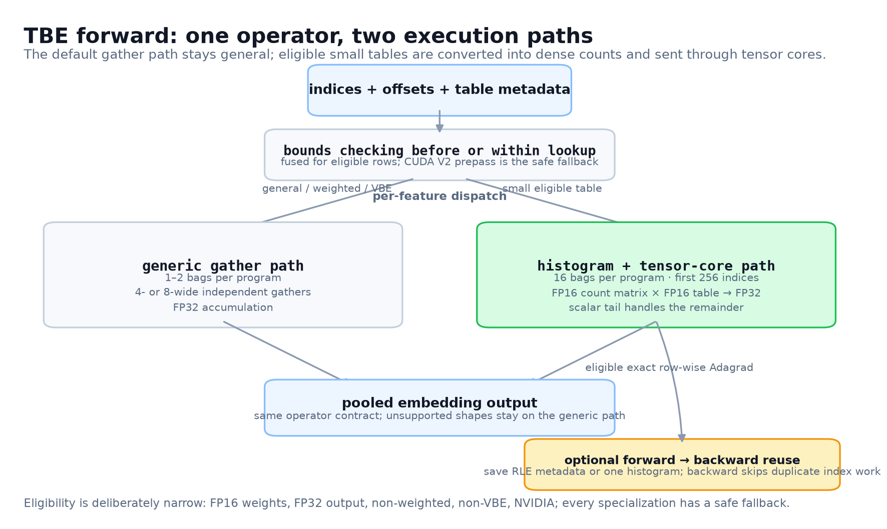
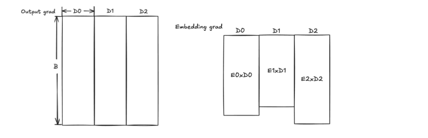
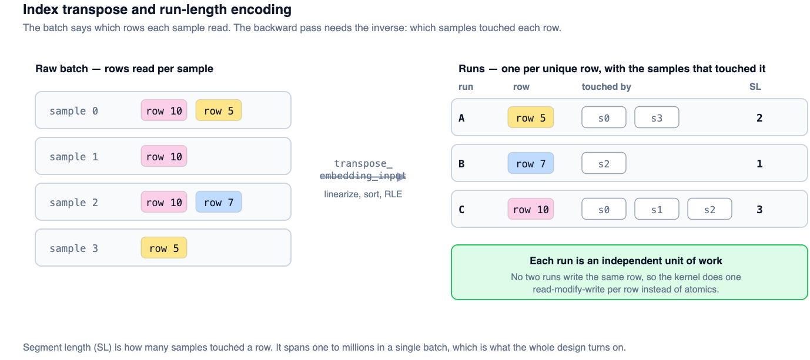
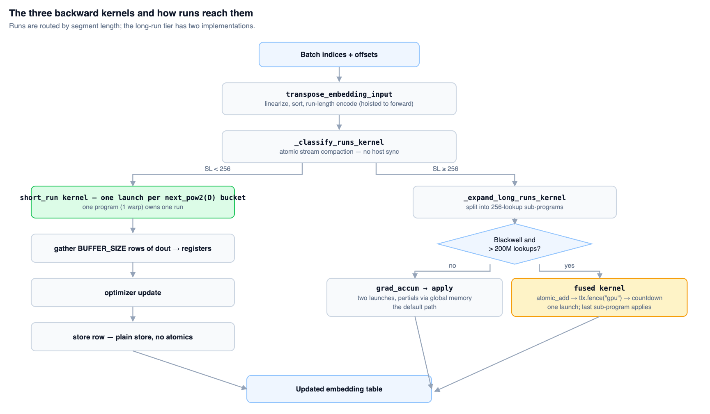
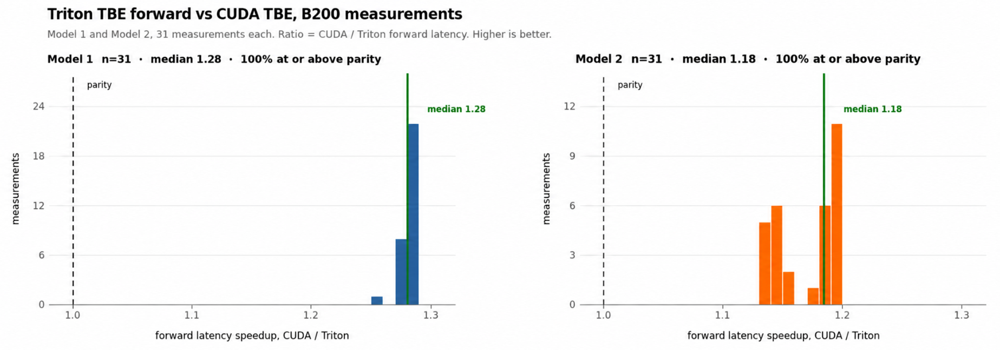
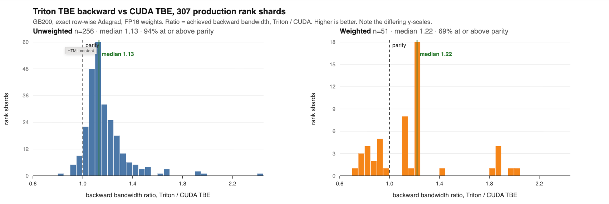
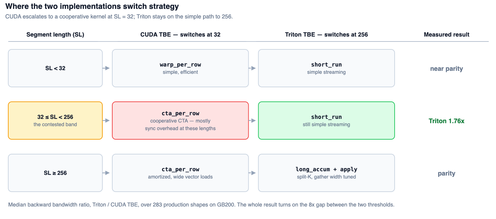
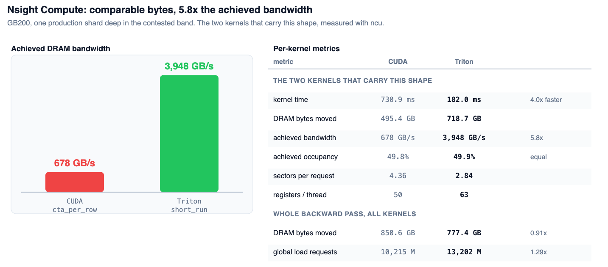

推荐系统的embedding查找横跨数千个分片GPU，TBE（Table Batched Embedding）是把多张表的查找与pooling压进一次GPU launch的核心算子。PyTorch团队用FBTriton把整条稀疏路径重写了一遍：普通Python，体量比原来的CUDA模板还小。
结果是前向后向全面超过legacy CUDA kernel：前向中位数1.28倍，反向在307个生产分片上Unweighted中位数1.13、Weighted 1.22。赢的关键不是搬更多字节，而是把策略切换点从SL=32挪到256，砍掉CTA级同步的摊销负担。
这篇博客介绍FBTriton的TBE（Table Batched Embedding）前向与反向kernel设计。这些核心算子在推荐系统里横跨数千个分片GPU做embedding查找。Triton实现在这些负载上全面超过legacy CUDA kernel。这里解释架构设计、实测性能增益，以及未来的优化机会。
TBE kernel在一个GPU操作里对多张表高效做embedding查找与pooling：把多张表的查找与pooling合并到一次GPU launch，减少launch开销、提升内存效率。
每个表每个bag：前向gather索引到的行，可选乘以per-sample权重，在FP32（FP32权重用FP64）累加，写出一个D维的pooled输出。做了两套实现：通用gather，以及带小表直方图的快速路径。
默认gather路径保持通用；符合条件的小表转成稠密计数送进tensor core。

专用路径只选一个feature：E≤64、64≤D≤128、L≥64、FP16权重、FP32输出、无per-sample权重、无VBE。一个program处理16个bag：对前256个索引建直方图，用tl.dot算counts×table；标量路径处理剩余索引。其他形状走通用kernel。
独立路径在Triton前向之前用更新过的CUDA校验步骤。B200上边界检查组件在各负载上最高加速1.24倍。启用fused_bounds_check后，符合条件的kernel校验并修复非法输入张量；offset校验与修复仍是单独的小kernel。weighted、variable batched、AMD、transpose-hoist等配置回退到标准校验。该选项经TorchRec暴露，默认关闭。
精确row-wise Adagrad可以保存前向直方图：反向用这些计数做补偿的FP16高低位GEMM进FP32，再应用优化器。前向与反向仍是两次launch，只复用直方图计数。
另一条可选的core-module路径把index转置、排序、run-length编码搬进前向，经autograd把元数据传出来。默认关闭，当前TorchRec wrapper未暴露。大B200配置上：前向22.844 ms升到33.252 ms，反向56.693 ms降到32.931 ms，合计79.537 ms降到66.183 ms（-16.8%）。
TBE反向的核心逻辑：对batch里碰到的每个唯一(table, row)对，把所有碰过它的batch位置的上游梯度行加起来，再对该行恰好做一次优化器更新。
符号：T为表数；E为embedding size（行数）；D为embedding维度（列数）；L为pooling因子（embedding bag大小）；B为batch size（每请求的embedding bag数）。

transpose_embedding_input把batch反转为run：一个唯一行配上碰过它的样本。这个操作hoist进前向，不在反向关键路径上。

Segment length（SL，碰过一行的样本数）是所有分流的依据，一个batch内从1跨到数百万。run按SL路由到三个kernel之一。

weighted表只多一步：累加前把每个梯度行按其per-sample权重缩放。
一个program走两百万次查找让GPU空转，而一长串单次查找的run尾巴为几乎没活的工作付全额per-run成本。
解法1.1：切长run。达到阈值的run按固定256查找切块，split-K风格。两百万次查找的run变成约八千个子program，单行的活就够填满机器。
解法1.2：CLC（TLX Blackwell）。kernel启动后常驻，不断"偷"空闲的run_id接着处理；偷到就在同一个block里处理，偷不到就退出。不再需要按频率二分run_id的软件方案，CLC给了硬件解法。
每个缓冲行让BLOCK_SIZE个64位地址常驻，因为dout_row_start_ptr[:, None] + col_offsets[None, :]实例化出整块指针tile。代价是宽度×BLOCK_SIZE，在一个行宽上调好的宽度到另一个行宽就错了。
解法：每档目标配自己的宽度。B200实测。
一次launch必须按所有表的next_pow2(max_D)定BLOCK_SIZE；当查找主导的表比最宽的表窄得多时，每个gather行的绝大部分lane都被mask掉。
解法是按维度分桶：分类时短run按next_pow2(D)进各自桶，每个桶用自己的BLOCK_SIZE launch。折进分类kernel，不多一次pass；profiling确认省的是lane浪费，不是occupancy。
哪个run算长是数据决定的、只在GPU上知道；用.item()把计数读回是每次反向一次cudaStreamSynchronize。
解法：把形状留在GPU上。workspace按索引数算出的上界预分配，分类kernel里用atomic计数做stream compaction：
is_long = (run_len >= threshold) & mask
num_long_block = tl.sum(is_long.to(tl.int32))
long_base = tl.atomic_add(num_long_ptr, num_long_block)
long_local = tl.cumsum(is_long.to(tl.int32), axis=0) - 1
tl.store(long_run_ids_ptr + (long_base + long_local).to(tl.int64),
offsets.to(tl.int32), mask=is_long)每个block一次atomic而非每个元素一次，块内偏移来自前缀和。kernel随后把计数当device指针消费，用while循环自分配。
run一切分，优化器更新必须等所有子program的partial都落盘。Triton没有device-scope fence，只好用第二个kernel加一次global memory往返。
解法：fence加倒计数（TLX Blackwell）。TLX暴露fence，让最后一个子program在同一次launch里应用更新：
tl.atomic_add(temp_grad_buffer_ptr + temp_grad_offset + col_offsets, grad, mask=mask)
tlx.fence("gpu")
remaining = tl.atomic_add(grad_accum_counter_ptr + grad_buffer_id, -1)
if remaining == 1:
... # last sub-program applies the optimizer and stores正确性论证在顺序上：fence让每个partial在倒计数递减前device-wide可见；看到remaining==1的program读到的是完整求和。没有它，一个program可能在另一个的atomic_add还在路上时就赢了倒计数：静默的数值错误。
每个子program把整行BLOCK_SIZE atomic加进该run的workspace槽。切成八千块的run就是八千个program争同一行，tl.atomic_add逐元素发合并。
解法：经TMA做reduce（TLX Blackwell）。Blackwell有比tl.atomic_add更好的合并partial指令cp.reduce.async.bulk.tensor，经tlx.async_descriptor_store(..., store_reduce="add")暴露。
GB200上307个分片配置（283个不同形状），精确row-wise Adagrad，FP16权重。指标：Triton性能除以CUDA TBE。前向中位数加速1.28倍。

两个模型的分布都在持平线右侧：没有配置退回到CUDA之下。

大部分胜利来自改run-length：CUDA在SL=32就升级到cooperative CTA-per-row kernel；Triton的简单streaming一直用到SL=256。

加速来自更好的内存吞吐。胜负带深处Triton快4.3倍，搬运的DRAM字节数相当（0.91倍），load请求多发29%。Nsight Compute定位差异：承载该形状的CUDA kernel达到678 GB/s，Triton kernel 3948 GB/s（5.8倍），occupancy相同。SL=32刚过一点时，CTA级同步没东西可摊，Triton路径干脆没有协作。

胜利来自配置值：第2节的每个fix都暴露为配置项。模板生成的CUDA里挪一个升级点或gather宽度，意味着重构kernel分工。
Triton还输的地方：工作全在SL<4的run里的形状低于持平线，纯dependent-load延迟；CUDA的warp-per-row把per-run元数据摊得更好。307个分片里11个，每个不到一毫秒。SL>256的形状是持平而非领先；成为负载瓶颈时会再投。
FBTriton最持久的成果：整个稀疏路径（前向加反向）现在用普通Python写成，体量比原来的CUDA模板还小。于是未来能做更多前向里演示过的那种融合，解锁这些好处。
参考：https://pytorch.org/blog/modernizing-table-batched-embeddings-with-fbtriton/